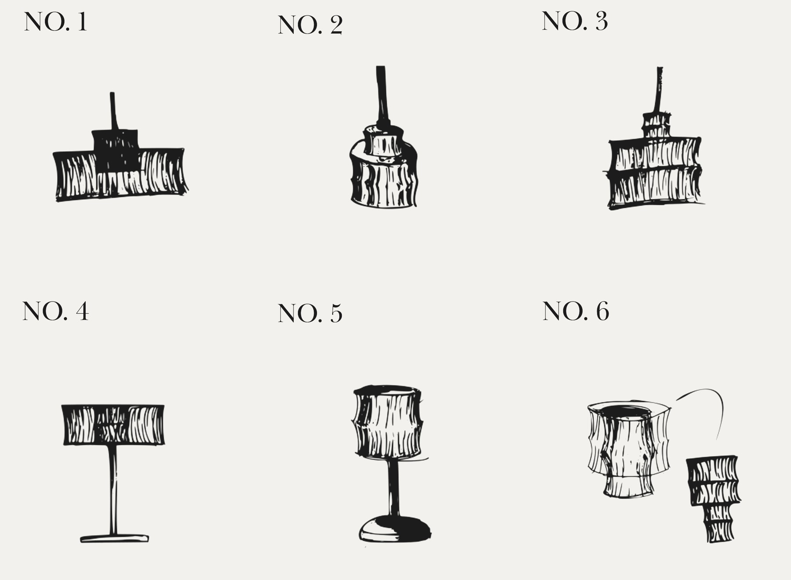
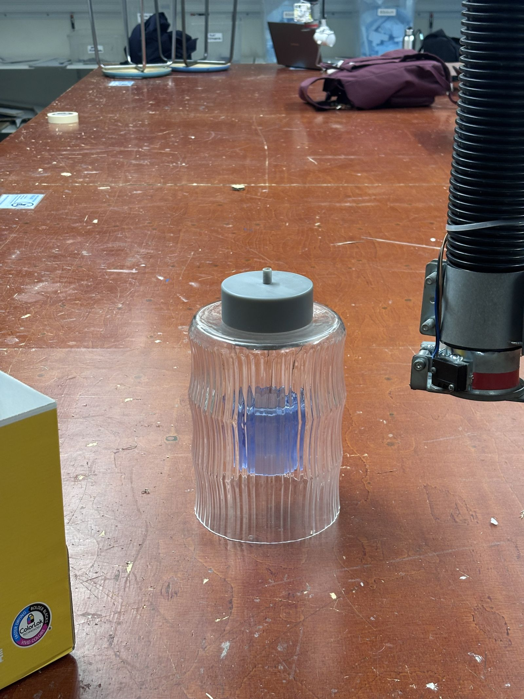
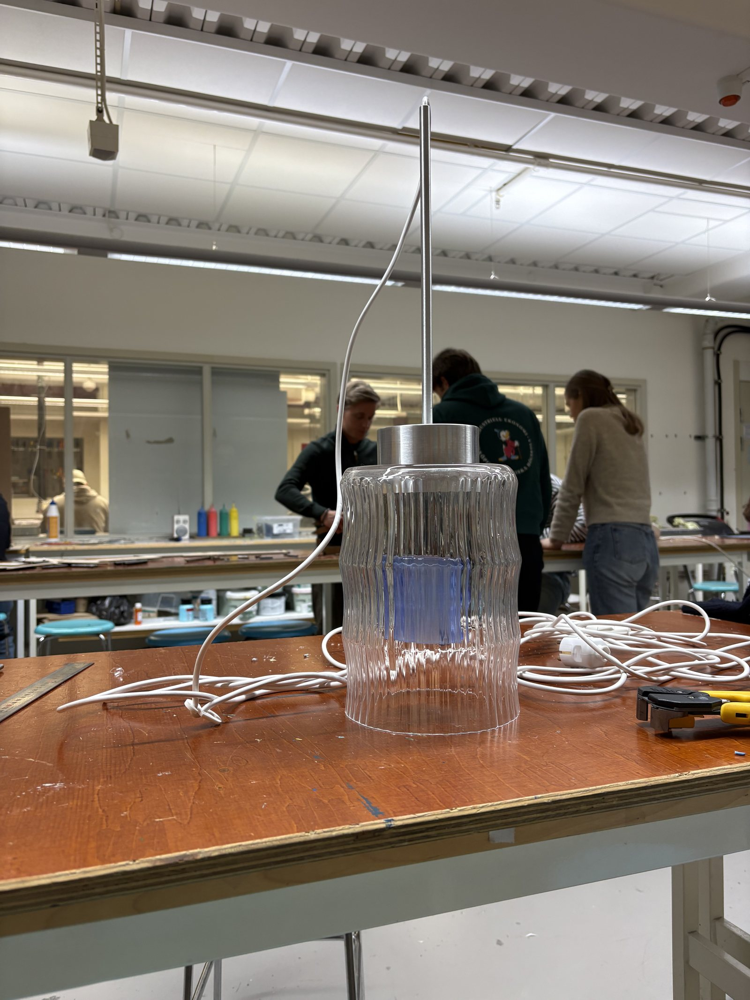
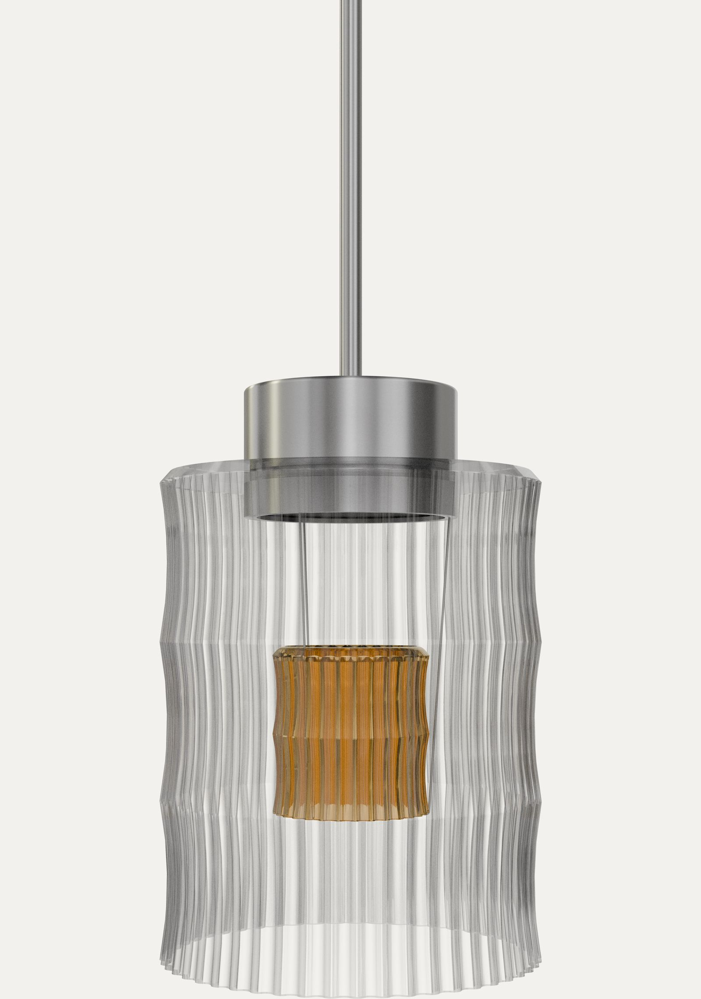
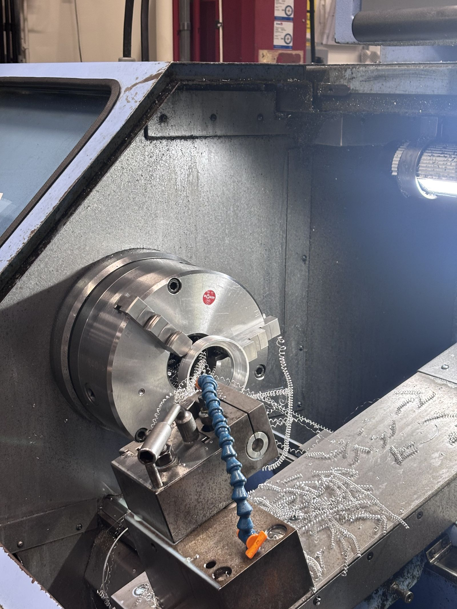
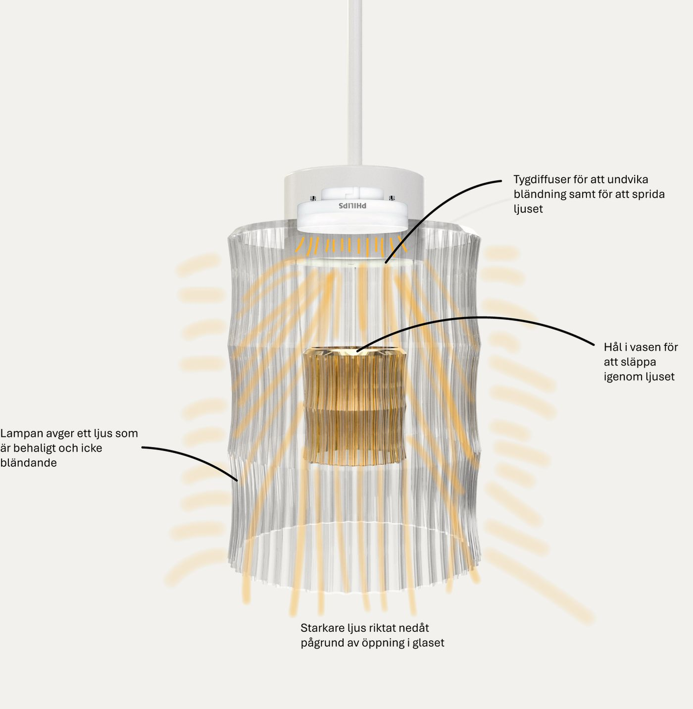
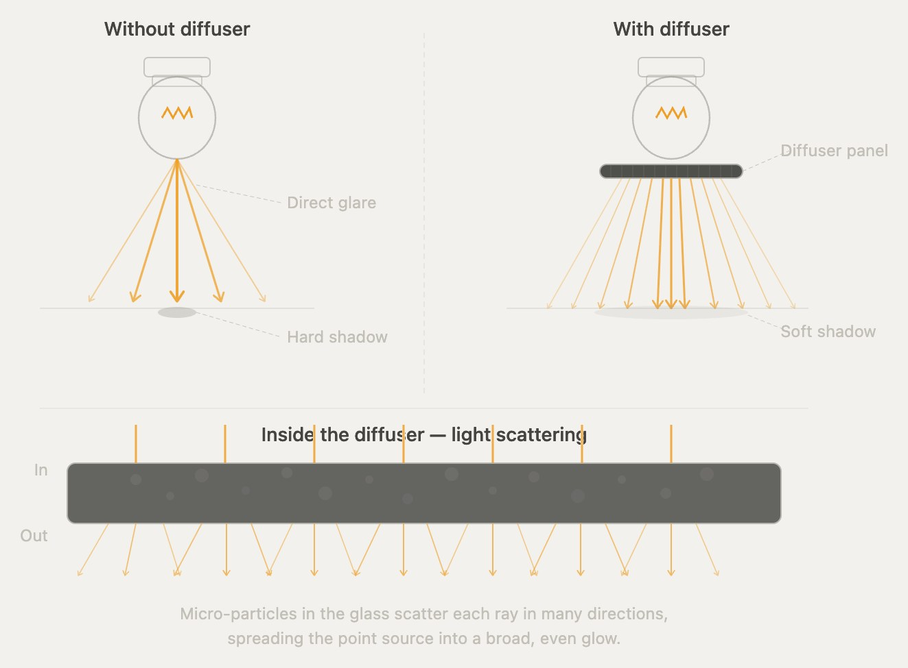

Reijmyre Glasbruk · Bachelor's thesis · 2026
Celina
A ceiling lamp where glass meets metal to create a floating design, built to celebrate the colours Reijmyre Glasbruk is known for.
Introduction
Existing glass, new light.
A bachelor's thesis for Reijmyre Glasbruk, which has blown glass by hand since 1810. The brief was to turn their existing Lina glass collection into reproducible lighting built on standard components. Celina pairs two pieces from the collection, using light to bring out the colour of the glass rather than depend on it.


Three principles of light
Built on ambient luminescence.
The project is based on lighting designer Richard Kelly's three principles of light: ambient luminescence, focal glow and play of brilliants. Celina is built on the first, a soft, shadowless light that fills the room.

Process
From light lab to floating glass.
The work started in a light lab, testing light sources, colour temperature and how light travels through Reijmyre's glass. Coloured glass tints everything and can't stop glare, so the source had to be hidden and the light had to lift the colour rather than depend on it.
The insights fed straight into sketching. Of the early concepts, No. 3 became Celina: a small coloured vase suspended inside a large clear Lina vase. Physical test versions were used to judge proportions, hanging height and the glow of the inner glass before committing to the final construction.


Light-lab tests and early concept sketches. Celina grew out of No. 3.


Test versions on the bench and hanging in the workshop.
Production & assembly
Optimised for production, easy to assemble.
Celina uses glass Reijmyre already blows, so no new moulds are needed. Everything else is standard or simple to make: a GX53 LED puck, three CNC-turned aluminium parts modelled in Fusion 360, and one bent sheet-metal bracket. The construction tolerates the natural variation of hand-blown glass.
Assembly is just as simple. The glass is clamped mechanically between the top cap and the lower lock ring, and the inner vase hangs from three 1 mm wires tensioned in the lock ring, which adds to the floating effect. A 300 mm gravity pipe keeps the lamp hanging straight, the power cable runs hidden through the pendant tube, and the bracket with integrated strain relief lets the ceiling canopy stay small.




From turned parts to an assembled lamp.
Light
Soft ambience and useful light from one lamp.
The top of the inner vase is cut off so it directs an even beam downwards, and a fabric diffuser in the lock ring spreads the light and prevents glare. Most of the light falls through the inner vase onto the table, while the ribbed outer glass glows softly around it.


Vernissage
Shown at the final vernissage.
The finished prototype was presented at Linköping University in a staged dining scene, together with Reijmyre's glass. Celina gives Reijmyre a way to sell pieces they already make as a premium light.


Next project
Modulix →